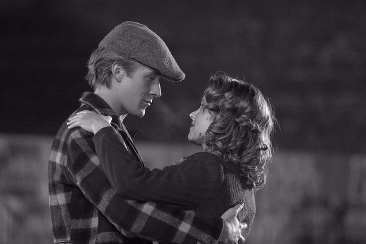
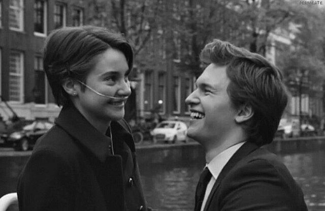
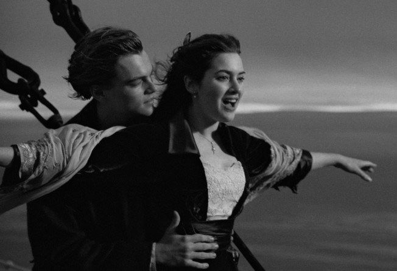
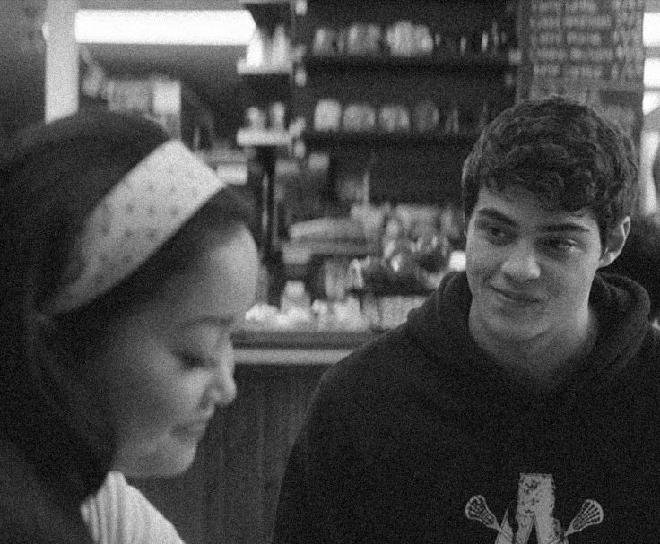
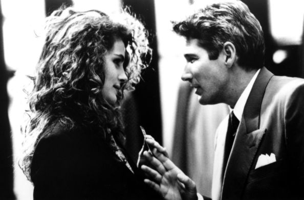
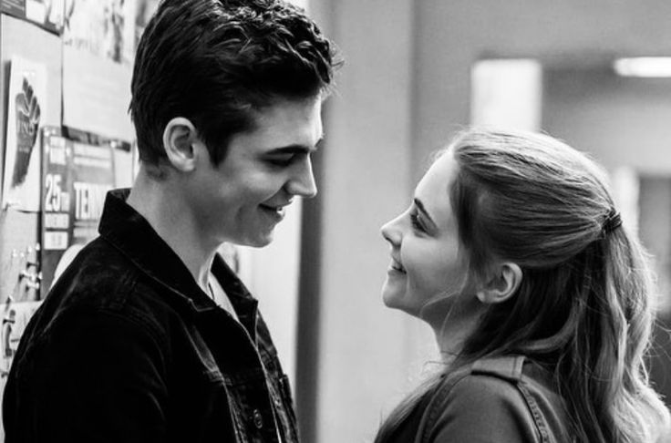
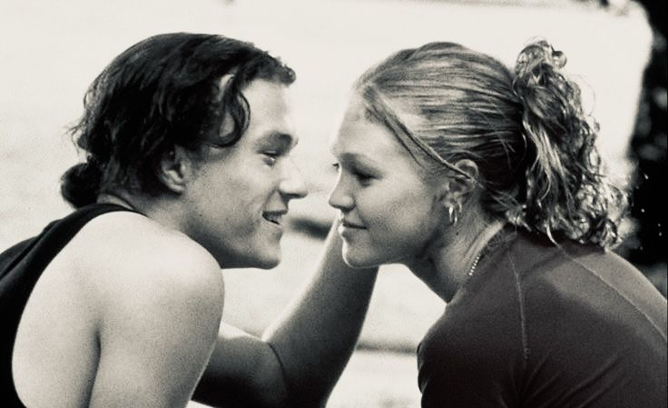
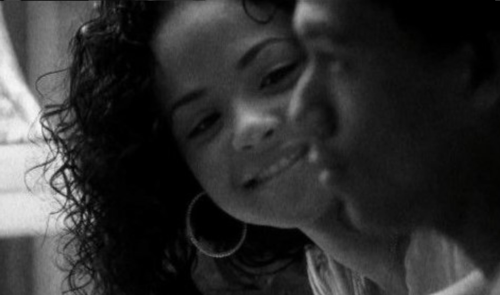
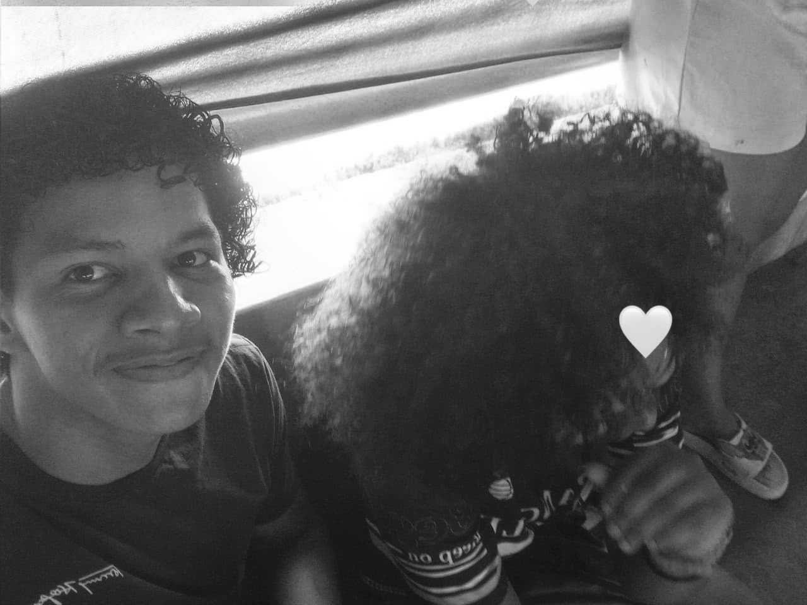

💙 Tenho algo para te contar...
Preparei uma pequena surpresa para uma pessoa muito especial.
Essa pessoa é você! 🥹✨
Noah e Allie

"Não foi fácil. Foi muito difícil. E tivemos que lutar todos os dias."
Quero que a nossa história seja daquelas em que, mesmo depois de anos, a gente ainda escolha um ao outro.
Augustus e Hazel

"Você me deu uma eternidade dentro dos nossos dias numerados."
Quero viver cada momento com você como se o mundo tivesse nos dado um presente.
Jack e Rose

“Nunca vou desistir, Jack. Nunca.”
Compartilhando risadas, conversas, sonhos e momentos inesquecíveis.
Quero que, quando as coisas ficarem difíceis, a gente se lembre do motivo pelo qual começou.
Lara Jean e Peter

“Achei que, juntos, superaríamos qualquer coisa.”
Quero descobrir como é transformar todas as mensagens, os olhares e as expectativas em uma história de amor de verdade.
Edward e Vivian

“Quero o conto de fadas.”
Talvez eu não saiba como serão todos os nossos dias, mas quero descobrir ao seu lado.
Tessa e Hardin

“Você é a minha exceção.”
Você já faz parte dos meus pensamentos; imagina quando eu puder te chamar de minha namorada.
Kat e Patrick

"Eu odeio o quanto não consigo te odiar, nem mesmo um pouco, nem mesmo por um segundo, nem mesmo só por te odiar."
Às vezes, por mais que tentemos esconder nossos sentimentos atrás do orgulho, das provocações e das diferenças, existe alguém que simplesmente se torna impossível de não amar.
Alvin e Paris

"O amor verdadeiro não deveria ser uma troca de interesses, mas uma escolha sincera de duas pessoas que encontram uma na outra algo que o dinheiro jamais poderia comprar."
Não precisamos fingir ser alguém diferente para conquistar o amor de outra pessoa. Quem realmente nos ama deve conhecer nossa verdadeira essência e escolher ficar ao nosso lado por vontade própria.
Júnior e Rayssa

E talvez essa seja a parte mais bonita de tudo, porque ninguém acorda de um dia para o outro sabendo que encontrou alguém especial. Às vezes, a gente simplesmente começa a gostar da presença, se acostuma com as mensagens, sente falta quando a pessoa não aparece e começa a querer contar as coisas mais bobas do dia.
Quando percebemos, aquela pessoa já se tornou uma parte importante da nossa vida.
É engraçado pensar que, em tantos filmes, os personagens passam a história inteira tentando entender o que sentem, escondendo o amor atrás do orgulho, fazendo piadas para disfarçar o nervosismo e fingindo que não se importam tanto, quando, na verdade, tudo o que querem é ter certeza de que o sentimento é recíproco.
Acho que o amor tem um pouco disso também.
Não precisa ser perfeito como nos contos de fadas, nem ter cenas ensaiadas, declarações debaixo da chuva ou promessas impossíveis de cumprir. Às vezes, o amor está em uma mensagem inesperada, em uma preocupação disfarçada de implicância, em uma risada que melhora um dia ruim, em uma conversa que faz o tempo passar sem percebermos ou naquele simples desejo de continuar falando com alguém mesmo quando já não existe mais assunto.
E, sinceramente, se eu pudesse escolher o tipo de história que quero viver com você, não escolheria aquela em que tudo acontece perfeitamente.
Prefiro uma em que duas pessoas possam ser elas mesmas, com seus defeitos, suas diferenças, suas manias, seus dias difíceis e até aquelas discussões bobas que, depois, acabam virando motivo de risada.
Quero uma história em que a gente possa brincar um com o outro, trocar provocações, rir de coisas sem sentido, falar sobre assuntos sérios quando necessário e encontrar conforto na companhia um do outro.
Uma história em que não precisemos fingir ser pessoas diferentes para merecer o amor, porque, para mim, gostar de alguém de verdade também significa conhecer suas imperfeições e, ainda assim, encontrar motivos sinceros para permanecer.
E sabe o que eu acho mais bonito nos romances?
É que, no final, não é necessariamente a pessoa mais perfeita que conquista o coração do protagonista, mas aquela que consegue enxergar quem ele realmente é, inclusive as partes que ele tenta esconder do resto do mundo.
É aquela pessoa que chega sem precisar mudar toda a nossa vida de uma vez, mas que, aos poucos, acaba mudando a maneira como enxergamos tantas coisas.
Eu não quero te prometer que vou ser o namorado perfeito, porque seria mentira dizer que nunca vou errar, que nunca vou ter um dia ruim ou que sempre vou saber exatamente o que fazer.
Mas posso te dizer que, se você me der essa oportunidade, quero aprender a te amar da maneira que você merece, respeitar seus sentimentos, ouvir suas preocupações, comemorar suas conquistas, apoiar seus sonhos e fazer o possível para que você nunca precise duvidar do lugar que ocupa na minha vida.
Quero ser aquele que te faz rir quando você estiver emburrada, aquele que implica contigo só para ver sua reação, aquele que percebe quando alguma coisa não está bem e aquele com quem você possa conversar sem sentir que precisa esconder quem realmente é.
Quero que a gente tenha nossas próprias referências, nossas piadas internas, nossas músicas, nossas fotografias, nossos momentos especiais e aquelas lembranças que, daqui a alguns anos, vão nos fazer sorrir e pensar: "Caramba, olha até onde a gente chegou".
E, se a nossa história fosse mesmo um filme, eu não gostaria que ela terminasse justamente quando os protagonistas finalmente descobrissem que se amam.
Eu gostaria de assistir aos capítulos seguintes, conhecer cada nova versão de nós dois, acompanhar nossas mudanças, superar as dificuldades ao seu lado e descobrir, dia após dia, novas razões para continuar escolhendo você.
Porque, no fim das contas, não quero apenas viver um romance bonito por alguns instantes; quero construir algo verdadeiro com alguém que também queira estar ali.
E é por isso que estou te dizendo tudo isso: porque você é alguém com quem eu gostaria de tentar fazer dar certo, alguém com quem quero descobrir o que podemos construir juntos, sem pressa para transformar tudo em uma história perfeita, mas com vontade de fazer dessa história algo nosso.
Talvez eu esteja sendo romântico demais, talvez você até ria de algumas partes disso tudo, e, sinceramente, se você rir, pelo menos vou ter conseguido arrancar um sorriso seu.
Mas, por trás de cada brincadeira, existe algo que quero que você entenda: minhas intenções com você são sinceras.
Não quero que você aceite algo por pressão, por medo de me magoar ou porque acha que me deve uma resposta. Quero que, se disser sim, seja porque seu coração também deseja viver isso comigo.
Quero que essa escolha seja nossa, que a gente comece sabendo que um relacionamento não é sobre encontrar alguém sem defeitos, mas encontrar alguém com quem valha a pena aprender, crescer e compartilhar a vida.
Então, se eu pudesse escolher uma cena para marcar o começo da nossa história, não escolheria uma cena grandiosa de cinema.
Escolheria algo muito mais simples: nós dois, sendo exatamente quem somos, olhando um para o outro e sabendo que, entre tantas pessoas que poderíamos ter encontrado, decidimos dar uma chance a algo especial.
E agora vem a parte em que o protagonista deixa de enrolar, para de fazer discurso e finalmente faz a pergunta que estava guardando no coração.